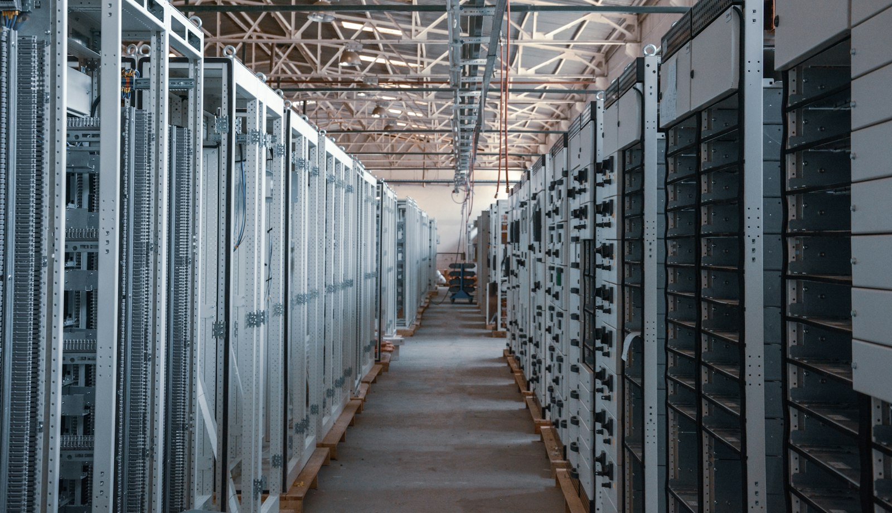
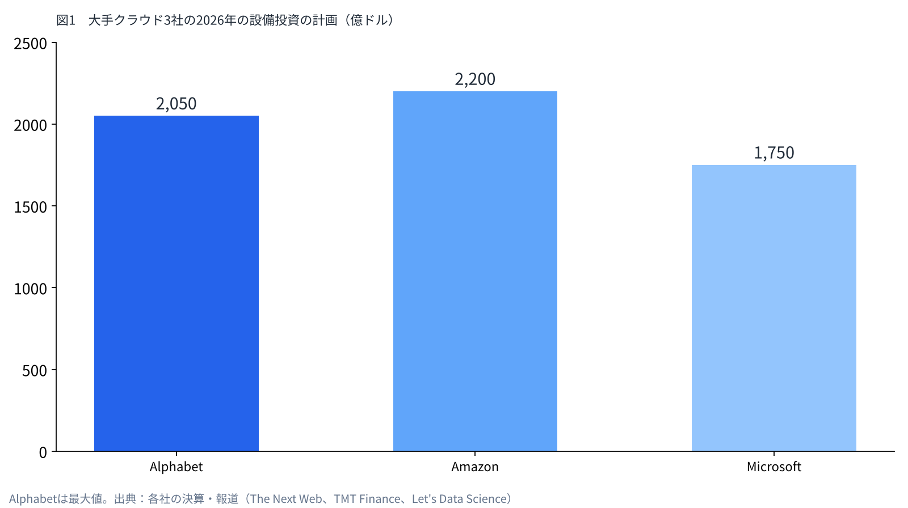
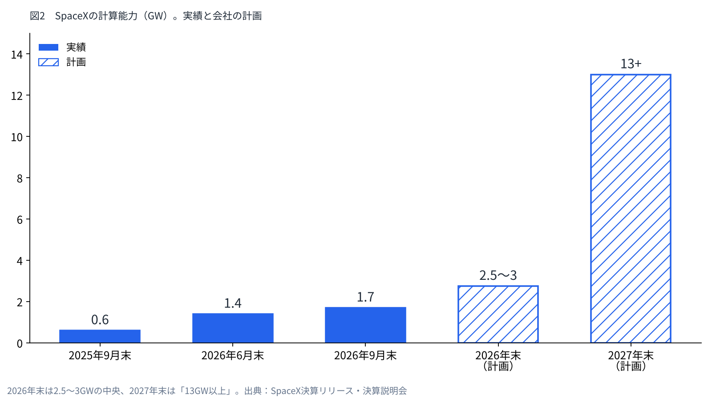

宇宙企業がAIクラウドになる。計算資源を競合に貸すという商売
ロケットの会社が、AIの計算資源を貸して稼ぎ始めた。借り手は、AIで競い合う相手でもある。
足りない計算資源、GPUを貸す商売の損益、宇宙で計算する構想を、一次資料の数字で並べる。
僕はSpaceXの株を持っている。その会社がどこで稼いでいるのかを、ここで確かめておく。

計算資源は、なぜ足りないのか
AIの学習と推論には、大量のGPUと電力が要る。大手クラウドは、その確保に過去にない額を投じている。Alphabetは2026年の設備投資の計画を最大2,050億ドルに引き上げた。Amazonは約2,200億ドル、Microsoftは約1,750億ドルを見込む。
それでも足りていない。AmazonのジャシーCEOは、2026年の需要をすべては満たせず、2027年も同じ状況になると述べた。Alphabetは、自社の施設が動き出すまで他社から借りた容量でしのぐと説明している。
電力も壁になる。国際エネルギー機関（IEA）は、データセンターの電力需要が2030年に約945TWhとなり、今の約2倍になると見込む。AI向けに最適化した施設に限れば、需要は4倍を超えるという。
計算資源は、作るのに時間がかかり、使いたい人が多い。だから、持っている会社が貸す商売が成り立つ。

GPUを貸すという商売の損益
GPUを貸すことを本業にするクラウドは「ネオクラウド」と呼ばれる。代表例のCoreWeaveは、2026年4〜6月期に売上25.75億ドルを上げた。前年より112%多い。
調整後EBITDAは15.10億ドルで、利益率は59%に達する。ところが純損益は6.26億ドルの赤字だった。支払利息が6.40億ドル、設備投資が64.22億ドルあり、減価償却と利息が利益を食っている。
CoreWeaveの稼ぎ方は、複数年のコミット契約が柱になっている。使わなくても支払う「テイク・オア・ペイ」で、加重平均の期間は約5年だ。その契約を担保に借りて、GPUを買う。2025年の売上の約67%は、Microsoft1社が占めた。
つまり、GPUを貸す商売は、現金の出入りの上では大きく稼ぐ。一方で、借りて買った設備の重さが、最終的な利益を圧迫する。
| 項目 | CoreWeave（2026年4〜6月期） | SpaceX AI部門（2026年7〜9月期） |
|---|---|---|
| 売上 | 25.75億ドル | 75.60億ドル |
| 調整後EBITDA | 15.10億ドル（59%） | 49.53億ドル（約66%） |
| 設備投資 | 64.22億ドル | 164.44億ドル |
| 計算能力 | 稼働1.5GW、契約済み約3.7GW | 1.7GW（年末2.5〜3GWの計画） |
| 契約の形 | 約5年のコミット契約 | ほぼスポット相場、90日前通知で解約可 |
| 資金の出どころ | 契約を担保にした借入 | 手元の現金と有価証券898.55億ドル |
SpaceXの貸し方は、何が違うのか
SpaceXのAI部門は、7〜9月期に売上75.60億ドルを上げた。調整後EBITDAは49.53億ドルで、利益率はCoreWeaveと同じく高い水準にある。
大きな借り手は2社だ。Anthropicは、2029年5月まで月額12.5億ドルを支払う。Googleは、2026年10月から2029年6月まで月額9.2億ドルを支払う。2社を合わせると、計算資源の売上は年約260億ドルの規模になる。
CoreWeaveと違うのは、契約の形だ。SpaceXは決算説明会で、貸し出しは長期固定ではなく「ほぼスポット相場」だと説明した。更新のたびに、電力1Wあたりの単価が上がっているという。AnthropicとGoogleの契約も、90日前の通知で解約できる。
自社で使う分と外に貸す分は「おおむね50対50」で、60対40まで動かせる。新しく作った計算基盤は、今の価格なら1年かからずに投資を回収できると会社は述べている。
資金の出どころも違う。SpaceXは9月末で、現金と有価証券を898.55億ドル持つ。借りて買って長期契約で返すCoreWeaveに対し、SpaceXは手元の資金で作り、相場で貸している。

競合から料金を取るという構図
SpaceXには、Grokという自社のAIがある。AnthropicもGoogleも、AIのモデルを作る側の会社だ。つまりSpaceXは、AIで競い合う相手に計算資源を貸して、料金を受け取っている。
借り手の側にも事情がある。WSJが報じたAnthropicの上場申請の草案では、確定済みのクラウド契約が約4,500億ドルある。内訳はGoogle Cloudが1,110億ドル、AWSが1,100億ドル、Microsoftが310億ドルだ。交渉中のものを含めると、最大7,500億ドルになるという。
大手クラウドは、Anthropicを競合とみなし始め、容量を出すのにも苦労しているとTechCrunchは報じた。計算資源を握る会社が、AIの競争の行方を左右し始めている。
モデルの競争で誰が勝っても、計算資源を貸す側には料金が入る構図になっている。
宇宙で計算するという次の段階
地上の電力と冷却が足りないなら、宇宙に計算機を上げるという構想がある。Googleは2025年11月、「Project Suncatcher」を公表した。適切な軌道なら、太陽光パネルの発電効率は地上の最大8倍になる。81機の衛星を半径1kmの範囲で編隊飛行させ、光通信でつなぐ設計だ。
Googleの試算では、2030年代半ばに打ち上げ費用が1kgあたり200ドルを下回れば、電力のコストが地上とほぼ同じになる。鍵を握るのは、打ち上げの値段だ。
SpaceXは2026年1月、最大100万機の「軌道データセンター」衛星をFCCに申請した。高度500〜2,000kmに置き、電力の99%以上を太陽光でまかなう。Anthropicも、SpaceXと数GW規模の軌道上の計算を開発することに関心を示している。
ただし、今回の決算説明会では、軌道上のデータセンターには触れていない。今の売上は、地上の計算基盤から生まれている。

数字が示す弱点
この商売にも弱点がある。1〜9月の設備投資は480.69億ドルで、営業キャッシュフローの130.97億ドルを大きく上回る。Forbesの寄稿者は、AI部門のEBITDAに減価償却が入っていない点を指摘し、1990年代末の通信バブルに似ているとも書いた。
スポット相場で貸す形は、値上がりの局面では強い。しかし計算資源が余れば、単価は下がる。90日前の通知で解約できる契約は、借り手が自前の容量を持った時点で離れていく可能性も含む。
会社は、計算能力を2027年末に13GW以上へ増やす計画を示した。需要がその速さについてくるかが、この事業の分かれ目になる。
僕はこう見ている
僕はSpaceXを1,250株持っている。買ったときは、ロケットの会社だと思っていた。今の数字を並べると、計算資源を貸す会社の顔が大きくなっている。
結局、SpaceXが勝つのではないかと僕は見ている。競合から料金を取っているからだ。AIのモデルの競争でどこが勝っても、計算資源の借り手である限り、SpaceXには料金が入る。
シェアオフィスを経営する立場から見ても、この形は分かりやすい。誰に貸しても、貸す側の商売になる。大事なのは、自分の事業に利益が残るかどうかだと思う。
弱点は、設備投資の重さと、スポット相場の振れにある。僕は株価を当てにいかない。計算能力が計画どおり増えているか、貸し出しの単価が保たれているかを、決算ごとに確かめていく。
出典
- SpaceX 2026年7〜9月期決算リリース https://s21.q4cdn.com/184289198/files/content_files/SpaceX-Reports-Third-Quarter-2026-Results.pdf
- SpaceX 決算説明会の文字起こし（Benzinga） https://www.benzinga.com/news/26/10/62484605/spacex-q3-2026-earnings-call-transcript
- CoreWeave 2026年第2四半期決算 https://investors.coreweave.com/news/news-details/2026/CoreWeave-Reports-Strong-Second-Quarter-2026-Results/default.aspx
- CoreWeave 2025年度 年次報告書（10-K） https://www.sec.gov/Archives/edgar/data/1769628/000176962826000104/crwv-20251231.htm
- IEA「Energy and AI」 https://www.iea.org/news/ai-is-set-to-drive-surging-electricity-demand-from-data-centres-while-offering-the-potential-to-transform-how-the-energy-sector-works
- Google Research「Project Suncatcher」 https://research.google/blog/exploring-a-space-based-scalable-ai-infrastructure-system-design/
- Anthropic「Higher limits with SpaceX」 https://www.anthropic.com/news/higher-limits-spacex
- Google・SpaceXの計算資源契約（Reuters配信） https://www.timeslive.co.za/news/business/2026-06-06-spacex-lands-google-ai-compute-deal-after-anthropic-pact-ahead-of-ipo/
- SpaceXの軌道データセンター申請（DCD） https://www.datacenterdynamics.com/en/news/spacex-files-for-million-satellite-orbital-ai-data-center-megaconstellation/
- Anthropic 上場申請の草案（WSJ報道・Investing.com） https://au.investing.com/news/stock-market-news/anthropic-revenue-hits-163-billion-as-preliminary-s1-outlines-ipo-risks--wsj-4702261
- Alphabetの設備投資（The Next Web） https://thenextweb.com/news/alphabet-q2-2026-capex-205bn-cloud-82
- AWSの需要と容量（Let's Data Science） https://letsdatascience.com/news/aws-revenue-growth-outruns-available-ai-capacity-b0361d90
- 大手クラウドの設備投資（TMT Finance） https://www.tmtfinance.com/intel/2026-hyperscaler-capex-tops-us700bn-analysis
- Anthropicとクラウド各社（TechCrunch） https://techcrunch.com/2026/10/20/anthropics-cloud-partnerships-are-getting-messy/
- Forbes（2026年10月20日） https://www.forbes.com/sites/jimosman/2026/10/20/spacex-earnings-crushed-estimates-but-a-35-billion-risk-remains/
写真：İsmail Enes Ayhan／NASA（Unsplash）。図はYUKI CAPITALが作成
日々の数字と判断は、Xで記録している。